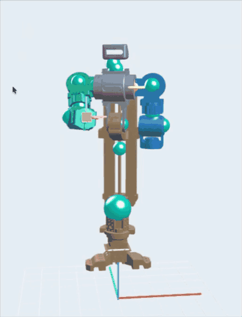
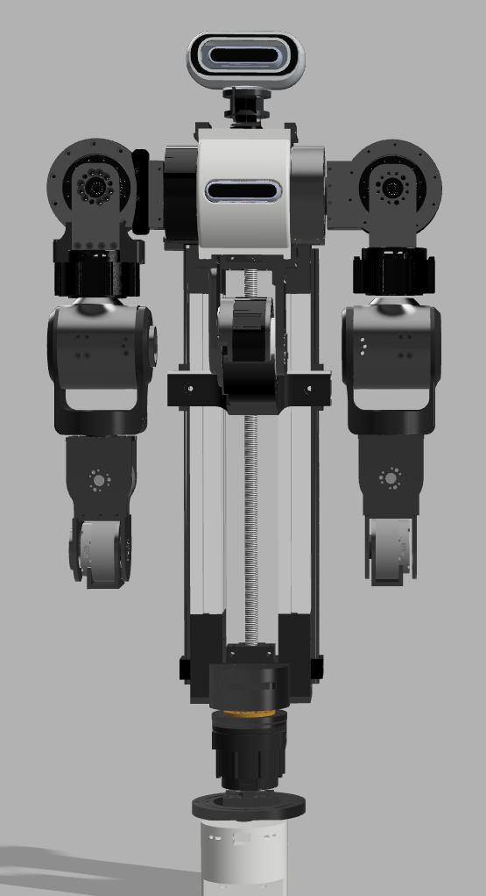

Mingyu Kim
k0136000@postech.ac.kr

Minoid Semi-Humanoid Robot
Minoid is a personal project: a semi-humanoid upper-body robot built as a research platform for Vision-Language-Action (VLA) models, and eventually as a testbed for building benchmarks around them. The name is taken from my own.
The constraint that shaped the entire design was cost. The goal was not the highest specification, but the most capable platform reachable at a price one person can carry — a decision that propagated into the actuator selection, the fabrication method, and the choice to build the software stack myself rather than buy it.

In its current form the robot has 13 actuated joints — four per arm, three in the waist, and two in the neck. The wrist is still being designed; once it is finished, each arm will carry seven degrees of freedom. The waist provides yaw, pitch, and roll, and the neck is a pan-tilt pair. Structural parts combine aluminium profile, 3D-printed components, and CNC machining, and the joints are driven by ROBSTRIDE series actuators together with EaglePower motors — selected, again, because they were the most affordable option that met the requirement.

For perception, the current design places one camera in the head and one in the chest, with two more planned at each end-effector once the wrist and gripper are settled. A gripper design is still under consideration.
Minoid is fixed-base today, but not by intention. The upper body is meant to be mounted on the differential-drive platform I built earlier, so that the robot can actually move. Keeping the base static for now separates the manipulation problem from the navigation problem and lets each be solved on its own terms.
Rather than working inside RViz, I wrote a dedicated controller for this robot — a PySide/Qt3D application built for Minoid alone. It covers the operating modes the platform needs: single moves, waypoint sequences, dual-arm coordination, real-time following, and pick-and-place demonstrations, all on top of MoveIt-based planning. Because it is my own application rather than a general-purpose viewer, it is also where the hardware-facing work will live: homing sequences and per-actuator log visualization, once the physical robot is connected.
The same control stack runs against both MuJoCo and Gazebo through ROS 2. This is deliberate: before sim-to-real, a behavior should survive sim-to-sim — if it only works in one simulator, it was fitted to that simulator's artifacts rather than to the robot. Isaac Sim is planned as a third environment. Within simulation, MoveIt-based planning currently works as intended across the implemented features.
One arm is assembled. The remaining parts are being sourced, the wiring harness is not yet built, the wrist is still on the drawing board, and completing the second arm requires another set of actuators. Matching the simulated model against real hardware has not been attempted yet; if direct matching turns out to be difficult, domain randomization is the fallback.
The hardest problems so far have not been control problems. They have been cost, and the electrical design of a high-current system to feed the actuators — the part of a humanoid build that is easy to underestimate from the software side.
The next milestone is mobility: once the upper body is joined to the mobile base, the platform can begin to support the VLA and VLN experiments it was built for.